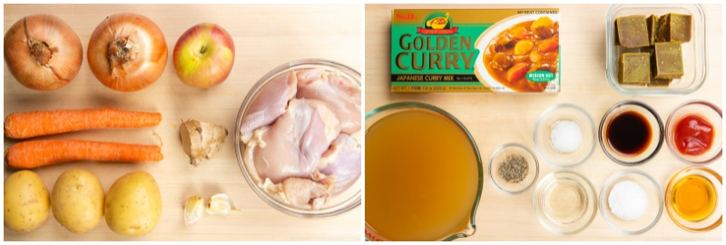
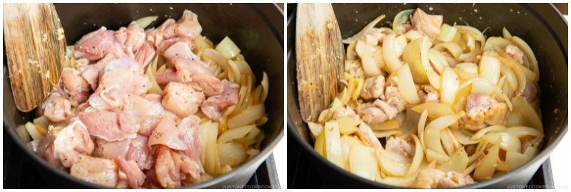
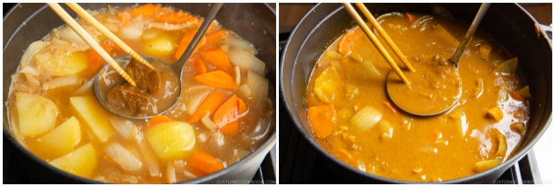

Chicken Curry

Description
Japanese chicken curry (チキンカレー, chikin karē) is a comforting and mildly spiced dish that features tender pieces of chicken simmered in a rich, thick curry sauce. The sauce is typically made from a combination of curry roux (a pre-made block or powder that includes flour, fat, and curry spices), onions, carrots, and potatoes, which are slowly cooked to create a smooth, velvety texture. The flavor profile is generally milder and sweeter compared to other curries, with a slight hint of umami from ingredients like soy sauce or apple.
Chicken curry is often served with steamed white rice, and sometimes accompanied by pickles (like fukujinzuke) or a side salad. It’s a staple of home-cooked meals in Japan and is cherished for its hearty, comforting nature.
Ingredients
- 2 onions (large; 1.5 lb, 670 g)
- 2 carrots (6.7 oz, 190 g)
- 3 Yukon gold potatoes (15 oz, 432 g)
- 1 tsp ginger (grated)
- 2 cloves garlic
- ½ apple (6 oz, 170 g)
- 1½ lb boneless, skinless chicken thighs
- freshly ground black pepper
For the Curry Sauce
- 1½ Tbsp neutral oil (for cooking)
- 4 cups chicken stock/broth (for lower sodium, use water only or half stock and half water)
- 1 Tbsp honey
- 1 Tbsp soy sauce
- 1 Tbsp ketchup
- 1 package Japanese curry roux (7–8 oz or 200–230 g; or make my Japanese Curry Roux)
For Serving
- 8 servings cooked Japanese short-grain rice
- fukujinzuke (Japanese red pickled vegetables)
Steps
- Gather all the ingredients. Please read my blog post on the “secret ingredient” we add to the curry. For this recipe, I add ginger, garlic, apple, honey, soy sauce, and ketchup.

To Prepare the Ingredients
- Cut 2 onions into wedges. I like to have the texture of the onions in my curry, so I cut them into thick wedges. If you prefer, you can mince or thinly slice the onions so they disintegrate into the sauce.
- Peel 2 carrots and cut them into rolling wedges (it‘s called rangiri in Japanese). This type of cut creates more surface area, which helps the carrots absorb more flavor and cook faster.
- Peel 3 Yukon gold potatoes and cut them into quarters. Soak them in water for 15 minutes to remove excess starch. Tip: Yukon gold potatoes hold their shape well. You can use russet potatoes, but they tend to disintegrate into the broth during cooking, so cut them into 6 pieces each and add to the pot toward the end of cooking.
- Grate the ginger (I use a ceramic grater) and measure 1 tsp ginger with the juice. Set aside. Mince 2 cloves garlic and set aside (I use a garlic press later when adding to the pot).
- Cut ½ apple into quarters, remove the core, and peel the skin.
- Grate the apple and set aside. Note: You also could use 1 small lunchbox apple for 8 servings.
- Cut off the extra fat from 1½ lb boneless, skinless chicken thighs and discard it. Then, cut the chicken into bite-sized pieces. I recommend cutting it diagonally (it‘s called sogigiri in Japanese) to create more surface area and flatten each piece so it cooks faster. Season with freshly ground black pepper. Tip: If you will use homemade curry roux, you can lightly season the chicken with kosher salt as well.
To Cook the Curry
- Heat 1½ Tbsp neutral oil in a large pot over medium heat and add the onion.
- Sauté the onions, stirring occasionally, until they become translucent and tender, about 5 minutes. Don‘t stir the onions too often because they won’t develop a golden color. Cooked onions add amazing flavor, so we do not want to skip this step. If you have an extra 5 minutes, definitely caramelize the onions!
- Add the minced garlic (I pass it through a garlic press for a finer texture) and grated ginger and mix well together.
- Add the chicken and cook, stirring frequently, until it‘s no longer pink on the outside. If the onions are getting too brown, reduce the heat to medium low temporarily.

- Add 4 cups chicken stock/broth. To reduce the sodium, you can substitute with water only or use half stock and half water, if you prefer. Tip: If you‘re using my homemade curry roux, you don‘t need to worry as it does not contain salt.
- Add the grated apple, 1 Tbsp honey, 1 Tbsp soy sauce, and 1 Tbsp ketchup (or any condiment you choose to add). Please read my blog post for details.
- Add the carrots and Yukon gold potatoes (if you‘re using russet potatoes, add them later in the last 15–20 minutes of cooking). The broth should barely cover the ingredients. Don‘t worry; we don‘t want too much liquid here, and additional liquid will be released from the meat and vegetables.
- Simmer, covered*, on medium-low heat for 15 minutes, stirring occasionally. *Simmer uncovered if the ingredients are completely submerged in the broth.
- Once boiling, use a fine-mesh strainer to skim the scum and foam from the surface of the broth.
- Continue to cook covered until a wooden skewer goes through the carrots and potatoes.
To Add the Curry Roux
- Turn off the heat. From 1 package Japanese curry roux, put 1–2 cubes in a ladleful of cooking liquid. Slowly let it dissolve with a spoon or chopsticks and stir into the pot to incorporate. Repeat with the rest of the blocks, 2 cubes at a time. Tip: I use 1 full-sized box of store-bought curry roux, which is typically for 8–12 servings (be careful, as some brands offer a smaller box, which is 4 servings). With my homemade curry roux, I typically use 6–7 cubes for 8 servings (about 80% of the curry roux mixture if it hasn‘t solidified yet).

- Simmer, uncovered, on medium-low heat, stirring frequently, until the curry becomes thick, about 5–10 minutes. If your curry is too thick, you can add water to thin the sauce. When you stir, make sure that no roux or food is stuck to the bottom of the pot; otherwise, it may burn.
- If you use my unsalted homemade curry roux, taste the curry now and add salt to your liking. Tip: I recommend adding 2–4 tsp Diamond Crystal kosher salt, but this will vary based on the brand of the chicken broth and condiments you added.
To Serve
- Serve the curry with steamed Japanese short-grain rice on the side. If you like, garnish with fukujinzuke (Japanese red pickled vegetables).
To Store
- You can keep the leftovers in a glass airtight container (so no stains!) and store it in the refrigerator for up to 3 days and in the freezer for a month. The texture of the potatoes will change in the freezer, so you should take them out before freezing. Defrost the frozen curry in the refrigerator for 24 hours before you want to reheat it.
To Reheat
- Leftover curry sauce will thicken into a paste as it cools, so it tends to burn while reheating. To avoid this, stir ½ cup (120 ml) water or more into the leftover sauce until loosened. Then, gently reheat it on low heat. If the sauce seems thin, continue heating with the lid off to reduce the sauce.
Back to the list of recipes!